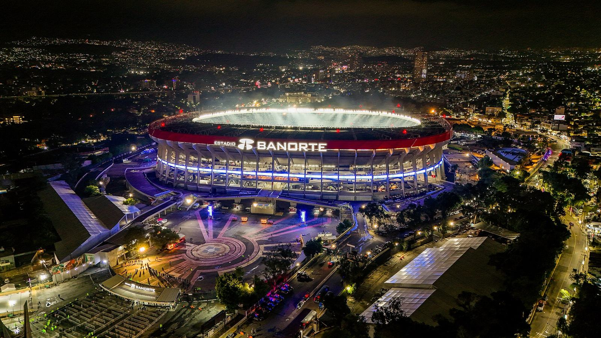

Liga MXPronósticos
Cerebro Liga MX
Marcador, resultado y combinada de cada partido. Y quién será campeón.
Estadio Banorte, donde juega Cruz Azul · Foto: ProtoplasmaKid / Wikimedia Commons / CC BY 4.0
En vivo
Al momento
01 · Pronósticos
Próximos partidos
Para cada partido: quién gana, el marcador más probable y una combinada de cuatro pronósticos del mismo juego.
02 · Quiniela
Combinada de la jornada
Un pronóstico por partido, juntos en un solo boleto. Entre más partidos, más paga y menos pega.
03 · Fase final
Liguilla
El cuadro completo: cuartos, semifinales y final, con el pronóstico de la ida y la vuelta de cada serie.
04 · Campeón
Camino al título
Lo que resta del torneo, jugado un millón de veces en la computadora.
05 · Clasificación
Tabla general
Cómo va hoy y cómo se espera que termine la fase regular.
06 · Rendición de cuentas
Última jornada
Lo que pasó contra lo que el modelo había dicho antes de cada partido.
07 · Las canchas
Estadios
Las casas de la Liga MX, de la más alta a la que está al nivel del mar, y cuánto pesan.
08 · Historia en liguilla
Dominios
Las parejas que más veces se han cruzado en liguilla desde 2001 y quién se ha llevado las series.
09 · Cómo se calcula
El modelo
Qué hace, qué tan bien lo ha hecho y, sin maquillaje, lo que no sabe.
10 · Fotos y videos
Créditos
Todas las fotos y videos son de sus autores, usados bajo las licencias que se indican.